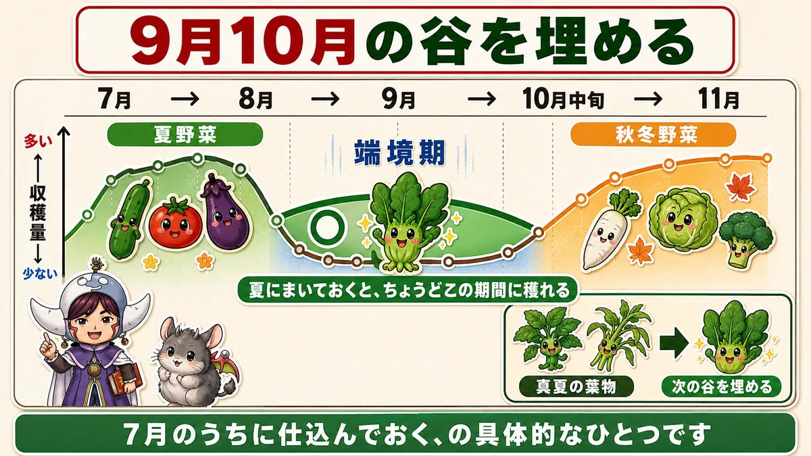
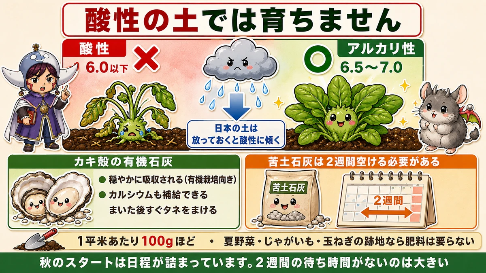
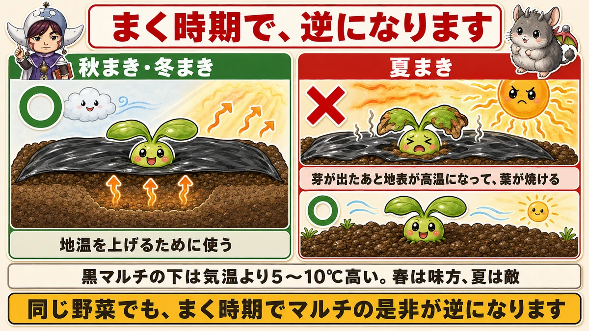
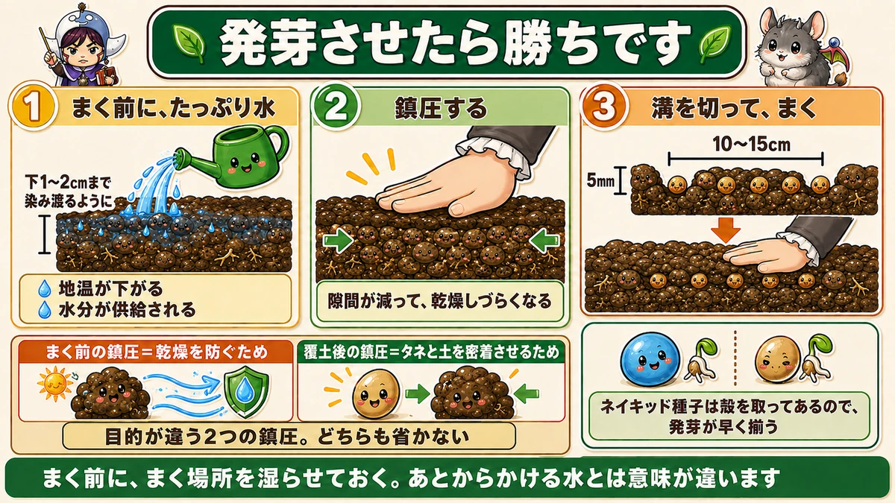

Water the ground before you sow 🥗 With spinach, germination is the whole game

🥗 "I sowed and only got a patchy row."
🥗 "Spinach is the one thing that goes wrong every year."
🥗 "There's nothing to pick in early autumn."
Hello, I'm Eiko. Eight years of growing vegetables organically and without pesticides, and a teaching licence in science.
Spinach looks easy and is, I think, the classic vegetable that doesn't work out.
The headline:
With spinach, if you get it to germinate you've won.
It fills the gap between seasons

What this diagram says （図解の文字）
- Filling the early-autumn gap
- July → August → September → mid-October → November
- harvest volume: "plenty" → "little"
- summer crops ／ the gap ／ autumn-winter crops
- "Sow in summer and it crops through exactly this period"
- "A concrete example of getting things underway in July"
There's a period — for me, September to mid-October — when there's very little to harvest. The summer crops are finishing and the autumn ones aren't ready. A trough between seasons.
Spinach sown in summer crops exactly through that trough.
Why a summer sowing is difficult
Honestly, it is. Two reasons:
1. It isn't a summer vegetable. Spinach grows in autumn, winter and early spring. High summer temperatures are not its season — you're asking it to do something it isn't built for.
2. There are more pests. Warm and wet means insects, and disease. The yield is at risk.
So you compensate with the variety
Modern breeding has produced a good number of varieties suited to summer sowing. Read the back of the packet and pick one that says it can be sown in summer.
Look for heat tolerance and downy mildew resistance, and if you can, a long-season variety you can also sow in autumn and winter — one packet then covers three sowings.
As ever: the answer is on the back of the packet.
It will not grow in acid soil

What this diagram says （図解の文字）
- It won't grow in acid soil
- ✗ acid — "6.0 or below" ／ ○ alkaline side — "6.5–7.0"
- "Rainy-climate soil drifts acid if left alone"
- Oyster-shell organic lime — ● "absorbed gently (suits organic growing)" ● "supplies calcium too" ● "you can sow straight after applying it"
Spinach has one strong preference: it dislikes acid soil.
Where rainfall is high, soil drifts toward acid if left alone — so doing nothing steadily makes the ground worse for spinach.
Two things to do, one material
- Push the pH toward alkaline
- Supply calcium
Oyster-shell organic lime does both. Three advantages:
- It's taken up gently — better suited to organic growing, and hard to overdo
- It contains calcium — pH adjustment and calcium in one application
- You can sow immediately after applying it
That third point is the big one. With dolomite lime you have to leave about two weeks before sowing. Organic lime you can sow the same day — and autumn schedules are tight. (Leaving it a week or two is fine if you have time; it isn't required.)
Rate: about 100 g per square metre (roughly 3 oz per square yard) — a light scatter.
You may not need fertiliser at all
Following summer crops, there's fertiliser left in the ground and you don't need to add more. Ground that grew potatoes or onions works well too — every previous crop leaves the soil with a character of its own.
For a summer sowing, no black mulch

What this diagram says （図解の文字）
- It reverses with the sowing season
- ○ autumn and winter sowing — "used, to raise soil temperature"
- ✗ summer sowing — "after germination the surface gets very hot and the leaves scorch"
- "Under black mulch it's 5–10 °C above air temperature. An ally in spring, an enemy in summer"
An important distinction: for a summer sowing, use neither black mulch nor perforated mulch.
Why: with mulch, the soil surface gets very hot once the seedlings emerge and the leaves scorch.
Under black mulch it runs 5–10 °C (9–18 °F) above air temperature. An ally in spring, an enemy in summer — and exactly the same thing happens here.
- Autumn and winter sowings — use mulch, to raise soil temperature
- Summer sowings — don't, because raising it is the last thing you want
Same vegetable, opposite answer, depending on when you sow.
Three steps to get it to germinate

What this diagram says （図解の文字）
- Germinate it and you've won
- 1 "Water well before sowing" — "soaking 1–2 cm down" — "soil temperature drops; water is supplied"
- 2 "Firm it" — "fewer gaps, so it dries out less"
- 3 "Draw a drill and sow" — 10–15 cm apart, 5 mm deep
- "Firming before sowing = to prevent drying; firming after covering = to press seed and soil together"
The heart of it. In summer, soil wetted by rain dries out again the same day. Sow into that and with high temperatures and not enough moisture, germination is late and a lot of seed never comes up at all.
1. Water heavily before you sow
The order matters. Water first, then sow.
- Not just the surface — soak it 1–2 cm (½–¾ in) down
- Keep going until the water starts to be slow to sink in
Two things then happen: the soil temperature drops, and there's moisture available — which is a good environment for spinach to germinate in.
It's the same thinking as pouring water into a planting hole before you set a plant in it. Wetting the ground beforehand is a completely different act from watering afterwards.
2. Firm it
After watering, look at the soil. If it's still fluffy, firm it before sowing.
Fewer gaps means it dries out more slowly — gaps are where the moisture leaves from. Pressing it down keeps the water there longer. Firming at this stage does no harm.
3. Draw a drill and sow
- Drill depth about 5 mm (¼ in)
- Rows 10–15 cm (4–6 in) apart
Shallow. Buried too deep, it won't come up.
And after covering, firm it again. The single biggest cause of poor germination is not firming enough.
Before sowing — to stop it drying out.
After covering — to press seed and soil together.
Don't skip either.
"Naked" seed
The other reason germination is uneven: spinach seed has a hard coat, and that coat doesn't let water through easily.
Which is why you can buy naked seed — seed with the coat removed. Water gets in immediately, so it germinates faster and more evenly.
If spinach has given you trouble, changing this one thing changes the result.
Put together:
- From the soil side — water before sowing, and firm
- From the seed side — choose seed with the coat removed
Both are ways of getting water to the seed. Germinate it and you've won, so this is where all the effort goes.
To sum up
- ✅ Germinate it and you've won
- ✅ Summer-sown spinach fills the early-autumn gap
- ✅ It's difficult because it isn't a summer vegetable and warm wet weather means pests
- ✅ Choose a variety marked for summer sowing — heat tolerance, mildew resistance
- ✅ It will not grow in acid soil, and rainy climates drift acid
- ✅ Oyster-shell organic lime does pH and calcium — and you can sow the same day
- ✅ About 100 g per square metre. After summer crops you may need no fertiliser
- ✅ No mulch for a summer sowing — the leaves scorch
- ✅ Water 1–2 cm down before sowing. Firm. Drill 5 mm deep, rows 10–15 cm
- ✅ Firm twice, for two different reasons
- ✅ Naked seed germinates faster and more evenly
You don't have to do all of it. Just water the ground before you sow. It's only a change of order — and it removes most of the failures 🥗
Thank you for reading!